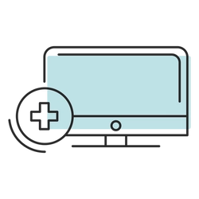

Nuestra razón de ser son los pacientes, con quienes estamos comprometidos de manera entusiasta. Reconocemos en Usted a un ser único, merecedor de respeto. Aportamos lo mejor de nosotros para su recuperación y bienestar a través de un servicio oportuno, competente y con altos estándares técnico científicos. Suministramos una información clara, respetuosa, suficiente y veraz. En nuestro actuar tenemos en cuenta a su familia, sus allegados y a la comunidad. Utilizamos la tecnología adecuada para su beneficio, en armonía con el Sistema de Seguridad Social. Procuramos los mejores resulados con el mínimo riesgo y a un costo razonable.Como parte del Sistema de Seguridad Social en Salud somos actores interdependientes con las Administradoras de Planes de Beneficios. Nos compromtemos a manejar de manera equitativa, ética y eficiente los recursos disponibles y a proporcionar la información oportuna, necesaria y certera que facilite la continuidad de la atención y la gestión de nuestros intereses comunes. Propiciamos el trabajo en equipo, facilitamos la comunicación, el diálogo constructivo y la toma oportuna de decisiones justas. Construimos un ambiente de confianza con horizonte de largo plazo, para beneficio de todos.Somos un centro de gestión de conocimiento a través de la docencia y la investigación, con la certeza de que ello contribuye en el avance hacia la excelencia para su bienestar.Queremos ser fuente de esperanza y consuelo con el fundamento en nuestros valores cristianos, somos el Hospital con Alma.
Apoyar en la práctica médica como voluntarios en el tratamiento de enfermedades graves y ayudar a su rehabilitación
Información adecuada y oportuna sobre su estado de salud para tomar decisiones libre y voluntariamente
Cumplir oportuna y disciplinadamente las prescripciones e indicaciones médicas
Comunicar de manera veraz y completa sus antecedentes de salud, personales y familiares